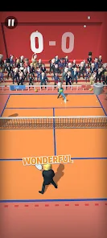

Updated July 18, 2026
Political Tennis:
Parody Clash
A satirical sports game with easy swipe controls, power shots, unlockable parody characters and comedy celebrations.

Updated July 18, 2026
A satirical sports game with easy swipe controls, power shots, unlockable parody characters and comedy celebrations.
